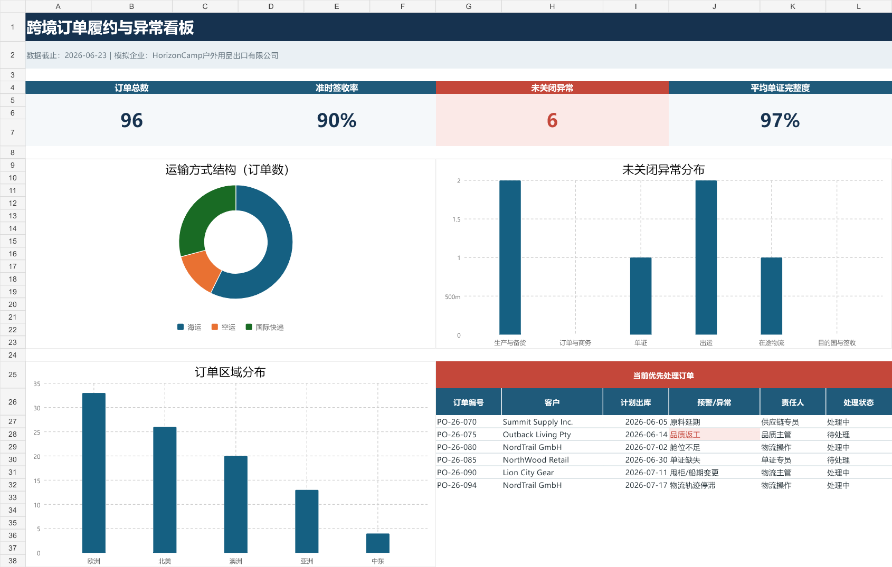

信息分散
订单、生产、物流和单证状态分布在不同记录中，风险不易集中识别。
以96条模拟跨境订单为基础，连接交期、物流、单证、异常响应与客户沟通，形成可追踪、可预警、可复盘的外贸跟单业务闭环。
项目模拟一家户外用品出口企业，产品包括帐篷、折叠桌椅、睡袋、野餐垫、露营灯和户外炊具，客户分布于欧洲、北美、澳洲、亚洲和中东。
订单、生产、物流和单证状态分布在不同记录中，风险不易集中识别。
订单增多后，仅靠人工记忆难以及时发现临近出库和已经逾期的订单。
异常出现后缺少统一等级、第一责任人、处理时限与升级机制。
问题解决后没有记录根因和纠正措施，导致类似问题重复出现。
看板汇总订单总数、准时签收率、未关闭异常和单证完整度，并展示运输方式、区域与异常分布。

尾期验货发现折叠椅连接件松动，需要返工和重新抽检，原海运舱位可能失效。项目将其识别为A级异常，并通过异常台账与SOP推动处理。
客户沟通结构：已知事实 + 影响范围 + 当前措施 + 下一次更新时间
PDF适合快速浏览，Excel和Word保留原始格式，便于查看公式、字段和完整SOP内容。
项目核心